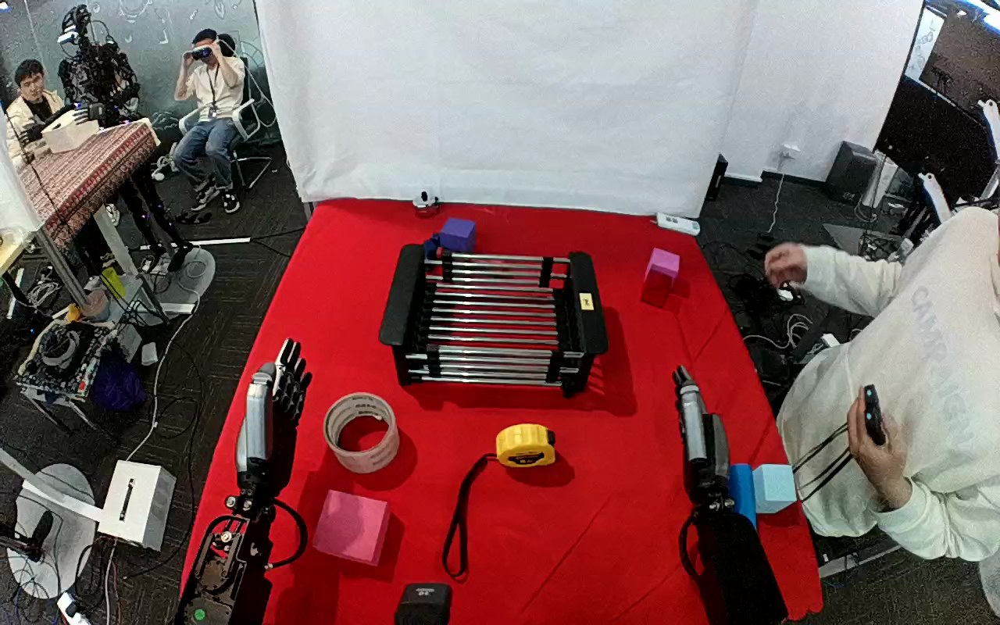

ActionNet · 01JMCA5VKE4FOEQ7FA
01jmca5vke4foeq7fa

Visual review action_review.json
{
"dataset": "ActionNet",
"episode_id": "01JMCA5VKE4FOEQ7FA",
"prompt_protocol": "humanoid_action_v1",
"prompt_provenance": "visually_authored_from_video_and_initial_frame",
"review_scope": "One dedicated agent reviewed the complete unchanged 401-frame top/rgb.mp4 and the generation first frame. Full single-task sequence retained.",
"source_video": "../../original/top/rgb.mp4",
"conditioning_first_frame": "../first_frame.png",
"generation_video": "../../original/top/rgb.mp4",
"action_prompt": "../actiongeneration_prompt.txt",
"source_frame_start": 0,
"source_frame_end_exclusive": 401,
"fps_rational": "30/1",
"resolution": [
1280,
800
],
"source_annotation": {
"verbatim_task_prompt": "Move the tennis ball into a clear plastic box",
"task_prompt_path": "../../original/task_prompt.txt"
},
"anatomical_side_evidence": {
"active_arm": "hand entering from the lower-right edge of the initial image",
"initial_frame_evidence": "Two forearms enter from the near lower image edges and point away from the camera toward the table; the active hand is attached to the lower-right forearm, the idle hand to the lower-left forearm. Torso and shoulders are outside the image. During the grasp the thumb plate lies on the image-left side of the palm-down hand, which is consistent with a robot right hand viewed from behind/above, but the camera pose relative to the robot body is not independently established.",
"confidence": "Visible-arm identity is unambiguous; anatomical right is plausible but not independently established, so the prompt uses the hand entering from the lower-right edge."
},
"arm_roles": {
"lower_right_visible_arm": "Sole manipulating hand: rises from rest, reaches over the yellow tape measure, slides the thumb under its left side while the fingers close over the top, bears it through lift and transport to the dish rack, lowers it onto the rack bars, opens the fingers to release it, and withdraws to the lower right.",
"lower_left_visible_arm": "Remains stationary beside the table at image left with fingers upright; no observed contact with the tape measure, rack or any other object."
},
"coordination": "Single-hand object placement. No hand-to-hand transfer, bimanual stabilization or regrasp. A person in a white hoodie at image right holds a controller and watches or moves in the background (apparent teleoperator) and does not touch the robot or any task object; other people are visible far upper left.",
"chronology": [
{
"frames": [
0,
22
],
"observation": "Initial scene: red tabletop with black dish rack at top centre, yellow tape measure with black strap near lower centre, masking-tape roll, pink and blue foam blocks. Both robot hands are at rest at the lower edges; the lower-right hand is upright and clear of all objects."
},
{
"frames": [
24,
66
],
"observation": "The lower-right hand rises and swings toward the table centre with fingers spread and extended, then descends toward the yellow tape measure. Native frame 40 shows the open hand raised above the table near the rack front."
},
{
"frames": [
68,
106
],
"observation": "The hand moves over the tape measure; at native frames 84-96 the thumb plate is slid in against the left/lower side of the tape measure while the fingers are held open above and to the right of it. No lift yet."
},
{
"frames": [
108,
150
],
"observation": "Fingers close down over the top of the tape measure while the thumb stays beneath its left side; native frame 120 shows the case enclosed between thumb and curled fingers and frame 150 shows a firm grasp with the case slightly rotated. The black strap trails from the case."
},
{
"frames": [
152,
230
],
"observation": "The hand bears the tape measure and raises it off the tabletop (frame 170 clearly airborne, strap hanging) and carries it up and left toward the dish rack, reaching a position above the rack front by frame 230."
},
{
"frames": [
232,
270
],
"observation": "The held tape measure is lowered onto the bars of the rack (native frames 240-268 show it close to and then touching the bars with the thumb still beneath it and strap hanging between bars). The first exact bar contact frame is partly occluded by the hand."
},
{
"frames": [
272,
288
],
"observation": "Release: at native frame 276 the tape measure is on the bars and the fingers start to straighten; frame 280 shows the fingers lifted clear of its top; frame 284 shows the tape measure resting on the bars with only the thumb plate still adjacent beneath it."
},
{
"frames": [
290,
340
],
"observation": "The thumb slides out and the hand lifts away with fingers extended, drawing back from the rack toward the lower right (native frames 300 and 320). The tape measure stays on the rack with the strap draped through the bars."
},
{
"frames": [
342,
400
],
"observation": "The hand folds upward and retracts to the lower-right resting posture (frame 360 at rest beside the blue and light-blue blocks) and remains still through the final frame 400. The tape measure rests on the rack throughout; the background person only gestures near their face."
}
],
"observed_outcome": {
"status": "successful_visible_placement",
"description": "The yellow tape measure is released onto the bars of the black dish rack and remains resting there while the lower-right hand withdraws to its resting position.",
"selected_action_outcome": "successful_visible_placement",
"source_overall_success_label": "not used to infer outcome"
},
"source_annotation_discrepancies": [
"The source instruction says to move a tennis ball into a clear plastic box. No tennis ball or clear plastic box is visible anywhere in the clip; the manipulated object is a yellow tape measure with a black strap and the target is a black metal dish rack. The usable prompt describes the observed objects.",
"The source offers no object-identity detail beyond the mismatched noun phrases; object names in the prompt come from appearance only."
],
"uncertainties": [
"Anatomical left/right of the robot is not independently established; the thumb orientation suggests a right hand but the prompt uses the unambiguous hand entering from the lower-right edge.",
"Exact first contact between the tape measure and the rack bars and the exact first table separation frame are partly occluded by the hand; stated chronology intervals bracket the visible transitions.",
"The object identification as a tape measure rests on its appearance (yellow rounded case with black strap).",
"Slight camera motion across the sequence is visible; the fixed-camera generation constraint is retained verbatim."
],
"inspection_coverage": {
"total_decoded_frames": 401,
"overview_frame_indices": {
"start": 0,
"stop_inclusive": 400,
"step": 2,
"count": 201
},
"overview_method": "Decoded RGB every second frame into 17 temporary 4-by-3 contact sheets outside dataset folders; reviewed all sheets.",
"native_resolution_frames": [
0,
40,
60,
72,
84,
96,
108,
120,
132,
150,
170,
200,
230,
240,
250,
260,
264,
268,
272,
276,
280,
284,
288,
300,
320,
340,
360
],
"native_resolution": [
1280,
800
],
"initial_png_inspected_after_full_sequence": true,
"temporary_evidence_location": "/tmp/an_review_01JMCA5VKE4FOEQ7FA (not under generation input; removed after review)",
"retained_evidence_frame_directories": false
},
"preservation": {
"whole_original_single_task_clip_retained": true,
"crop": false,
"shorten": false,
"resize": false,
"reencode": false,
"source_and_generation_sha256_equal": true
},
"prompt_word_count": 81
}